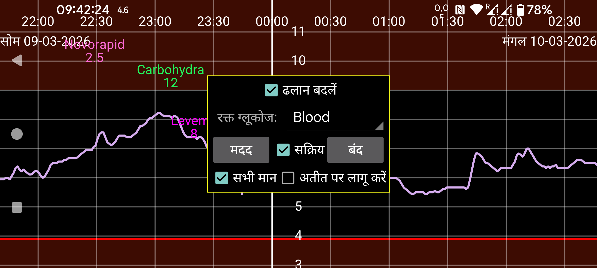

Juggluco 10.0.0 और उच्चतर में सेंसर को कैलिब्रेट करने की संभावना है।
रक्त ग्लूकोज: निर्दिष्ट करें कि कौन सा लेबल रक्त ग्लूकोज फिंगर प्रिक मापन के लिए है। इसके बाद, उस लेबल के तहत दर्ज किए गए सभी रक्त ग्लूकोज मानों का उपयोग कैलिब्रेशन के लिए किया जाएगा, सिवाय तब जब आप बायां मध्य मेन्यू→नई मात्रा के तहत “बाहर रखें” निर्दिष्ट करते हैं। जब परिवर्तन की दर बहुत बड़ी (पूर्णतः) होगी तो यह स्वचालित रूप से बाहर रख दिया जाएगा।
आपको केवल उन ग्लूकोज मानों को बाहर रखना चाहिए जो कैलिब्रेशन के लिए उपयुक्त नहीं हैं क्योंकि ग्लूकोज स्तर स्थिर नहीं है। अन्य सभी मानों को बाहर नहीं रखा जाना चाहिए, भले ही आपको लगे कि सेंसर को कैलिब्रेट करने की आवश्यकता नहीं है। जब आप कैलिब्रेट नहीं करना चाहते, तो “सक्रिय” को अनसेट करें और दाएं मध्य मेन्यू में स्ट्रीम, स्कैन और इतिहास से पहले ✓ अनसेट करें और उनके बाद [x] सेट करें। इस तरह, सभी उपयुक्त ग्लूकोज मानों का उपयोग कैलिब्रेशन के लिए किया जाता है, केवल वे नहीं जो सहमत नहीं हैं।
हर नया फिंगर प्रिक जो बाहर नहीं रखा गया है, एक नया कैलिब्रेशन देता है। आप सेंसर जानकारी स्क्रीन में “कैलिब्रेशन” दबाकर बनाए गए कैलिब्रेशन देख सकते हैं। आप ग्लूकोज वक्र को लंबा दबाकर या बाएं मेन्यू→सेंसर के तहत सेंसर जानकारी पर आ सकते हैं। (कैलिब्रेशन एक विशेष सेंसर के लिए विशिष्ट हैं।)
यदि “अतीत पर लागू करें” सेट नहीं है, तो ग्लूकोज मानों को ग्लूकोज मान से पहले के अंतिम कैलिब्रेशन के साथ कैलिब्रेट किया जाता है। यदि “अतीत पर लागू करें” सेट है तो अंतिम कैलिब्रेशन इस सेंसर के सभी ग्लूकोज मानों पर लागू किया जाता है।
ढलान बदलें:
यदि “ढलान बदलें” सेट नहीं है, तो कैलिब्रेटेड ग्लूकोज मान प्राप्त करने के लिए केवल एक निश्चित मान हर सेंसर ग्लूकोज मान में जोड़ा या उससे घटाया जाता है। कैलिब्रेटेड मान और सेंसर मान के बीच संबंध है:
कैलिब्रेटेड ग्लूकोज=SensorGlucose + b
b का मान कैलिब्रेशन से निर्धारित होता है। यदि आप इस सेटिंग का उपयोग करते हैं, तो आपको अधिक ग्लूकोज मानों का उपयोग करके कैलिब्रेट नहीं करना चाहिए क्योंकि निकाला गया b का मान कम ग्लूकोज मानों के लिए बहुत बड़ा होगा। अधिक मानों को कैलिब्रेट करने का भी बहुत अर्थ नहीं है, क्योंकि अधिक और बहुत अधिक के बीच का अंतर इतना महत्वपूर्ण नहीं है।
यदि “ढलान बदलें” सेट है तो संबंध बन जाता है:
कैलिब्रेटेड ग्लूकोज=a * SensorGlucose + b
जहाँ a 1 से अलग हो सकता है। विविध कैलिब्रेशन होना महत्वपूर्ण है। यदि उदाहरण के लिए सभी ग्लूकोज मापन तब किए गए जब ग्लूकोज मान लगभग 90 mg/dL (5 mmol/L) था और सेंसर मान 54 mg/dL से 180 mg/dL (3 mmol/L से 10 mmol/L) तक फैले हैं तो ये मान a के मान का अनुमान लगाने के लिए पर्याप्त विविध नहीं हैं।
Juggluco ग्लूकोज मापनों को इस आधार पर वज़न देता है कि वे कितने पुराने हैं। वर्तमान ग्लूकोज मान का वज़न=1 है, पुराने ग्लूकोज मानों का छोटा वज़न है। कैलिब्रेशन को भी वज़न दिया जाता है ताकि पुराने कैलिब्रेशन का कम प्रभाव हो, ताकि a समय के साथ 1 की ओर जाए और b समय के साथ शून्य की ओर जाए।
उपयोग किए गए रक्त ग्लूकोज मापनों का कुल वज़न यह निर्धारित करता है कि कैलिब्रेशन को कितना वज़न दिया गया है। अधिक (हाल ही के) रक्त ग्लूकोज मापनों के साथ, कैलिब्रेटेड ग्लूकोज मान इन मापनों से रक्त ग्लूकोज और CGM ग्लूकोज के बीच निकाले गए सर्वोत्तम फिट की ओर अधिक झुके होते हैं।
इतिहास मान स्वयं उस क्षण कैलिब्रेट नहीं किए जा सकते। मानों का कैलिब्रेशन Libre के लिए 21 मिनट बाद और CareSense Air सेंसर के लिए 31 मिनट बाद निष्पादित होने के लिए प्रोग्राम किया गया है, लेकिन यह अक्सर उसके बाद होता है। साथ ही, स्ट्रीम कैलिब्रेशन बाद के समय में दोहराया जाता है ताकि अगला CGM उपयोग किया जा सके।
सक्रिय:
जब सक्रिय सेट है, तो कैलिब्रेटेड ग्लूकोज मानों का उपयोग अलार्म, ब्रॉडकास्ट, Health connect, Juggluco में Nightscout/xDrip वेबसर्वर, घड़ियों को भेजे गए ग्लूकोज मान और फ्लोटिंग ग्लूकोज के लिए किया जाता है। Juggluco के दाईं ओर कैलिब्रेटेड मान बड़े फ़ॉन्ट में प्रदर्शित होता है और उसके बाद छोटे फ़ॉन्ट में बिना कैलिब्रेशन वाला मान होता है। इसका उपयोग Libreview को भेजने के लिए कभी नहीं किया जाता।
कैलिब्रेटेड ग्लूकोज मानों के वक्र का प्रदर्शन दाएं मध्य मेन्यू में “स्ट्रीम” और “इतिहास” से पहले चालू किया जाता है। कच्चे मान “स्ट्रीम” और “इतिहास” के बाद चेकबॉक्स से चालू और बंद किए जाते हैं।
सभी मान: कुछ मानों के लिए कोई कैलिब्रेटेड मान नहीं होता। कैलिब्रेटेड मानों का वक्र कुछ नहीं दिखाएगा, यदि “सभी मान” चेक नहीं किया गया है। यदि “सभी मान” चेक किया गया है, तो यह बिना कैलिब्रेशन वाला मान दिखाएगा। इस तरह आप दाएं मध्य मेन्यू→स्ट्रीम में कच्चे मान बंद कर सकते हैं और फिर भी सभी मान देख सकते हैं।